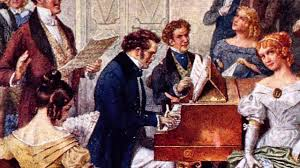

Schubert was born into a family of musicians, and his father was his first music teacher. He received formal training at the Imperial and Royal Seminary in Vienna, where he learned music theory, counterpoint, and composition. Schubert struggled to find success during his lifetime, as his works were not widely recognized or performed. Despite this, he continued to compose prolifically until his death at the age of 31.
Popular Works
- Winterreise
- Trout Quintet
- Death and the Maiden Quartet
- Unfinished Symphony
- String Quintet in C Major
- Moments Musicaux
- Ave Maria
Influence and Peculiarity
One important and significant aspect of Schubert as a composer and person is his prolific output of music during his short life. Schubert composed over 600 works, including more than 600 songs, 9 symphonies, chamber music, and piano music. He was known for his ability to effortlessly craft melodies and create emotional depth in his compositions. Despite being overshadowed by his contemporaries during his lifetime, such as Beethoven and Mozart, Schubert's music has become beloved and revered in the centuries since his death. His compositions were influential to later Romantic composers, such as Brahms, Bruckner, and Mahler, and his songs have remained a staple of the classical vocal repertoire. In addition to his prolific output, Schubert's personal life and struggles also make him a unique figure in music history. Schubert was born in Vienna in 1797 to a family of musicians, and he showed a natural talent for music from a young age. However, he struggled to make a living as a composer during his lifetime and often lived in poverty. Schubert was also known for his unconventional lifestyle, including his drinking and partying with friends in the artistic circles of Vienna. Despite these struggles, Schubert remained committed to his art and continued to compose until his death at the young age of 31. This dedication to his craft and his ability to create such beautiful and enduring music in the face of adversity is a testament to his talent and legacy in music history.
Personal Life
In terms of Schubert's personal life, he was known for his love of socializing and his involvement in Vienna's vibrant cultural scene. He was also known to have struggled with depression and health issues, including syphilis, which ultimately led to his untimely death. Despite his struggles, Schubert's music remains a testament to his talent and creative genius. In his later years, Schubert suffered from syphilis, which had a severe impact on his mental and physical health. He was known to experience delusions and hallucinations, and he eventually developed dementia. In one famous anecdote, Schubert was listening to a performance of his own String Quartet No. 13 in A minor when he suddenly exclaimed, "Who wrote this? It's really quite good!" He was told that he was the composer, but he had forgotten that he had written the piece.
Legacy
Schubert's legacy continues to be celebrated today, with his music remaining a staple of the classical repertoire. He is remembered as one of the most significant composers of the early Romantic era, with his works inspiring generations of musicians and music lovers alike. Despite his short life and struggles, Schubert's music remains a testament to his talent and his enduring impact on classical music.
Performed by Vladimir Horowitz
Impromptu No.3 in G Flat Major
Franz Schubert's Impromptu No. 3 in G-flat Major, Op. 90, is a solo piano piece that is one of his most famous works. It was composed in 1827, just a year before Schubert's death at the young age of 31. The piece is known for its dreamy and improvisational quality, with rolling arpeggios and a gently flowing melody. It is also notable for its technical difficulty, requiring a high level of virtuosity from the performer. The Impromptu No. 3 has been described as one of Schubert's most poetic and expressive works. It was originally published posthumously, along with three other impromptus, as part of a collection titled "Opus 90." The piece has since become a staple in the piano repertoire and has been recorded by numerous pianists. One of the most striking aspects of the Impromptu No. 3 is its emotional depth. Schubert had a talent for imbuing his music with a range of emotions, from joy and exuberance to melancholy and despair. In the Impromptu No. 3, the mood is reflective and introspective, with a sense of wistful nostalgia that is characteristic of Schubert's music. The piece seems to convey a sense of longing for something that has been lost, a feeling that is accentuated by its gentle, lilting melody.
The Death
Schubert died on November 19, 1828, at the young age of 31, after battling syphilis for several years. He had suffered from health problems throughout his life, including frequent illnesses and depression. In his final months, Schubert's condition deteriorated rapidly, and he experienced extreme weight loss and weakness. Despite his illness, he continued to compose prolifically and even completed his final work, the String Quintet in C Major, just weeks before his death. Schubert was buried in a small cemetery in Vienna, and his funeral was attended by a small group of family and friends. However, it was not until after his death that Schubert's music began to gain widespread recognition and acclaim.